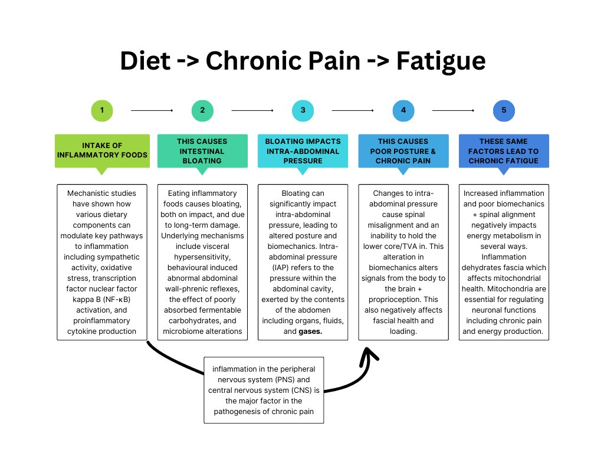
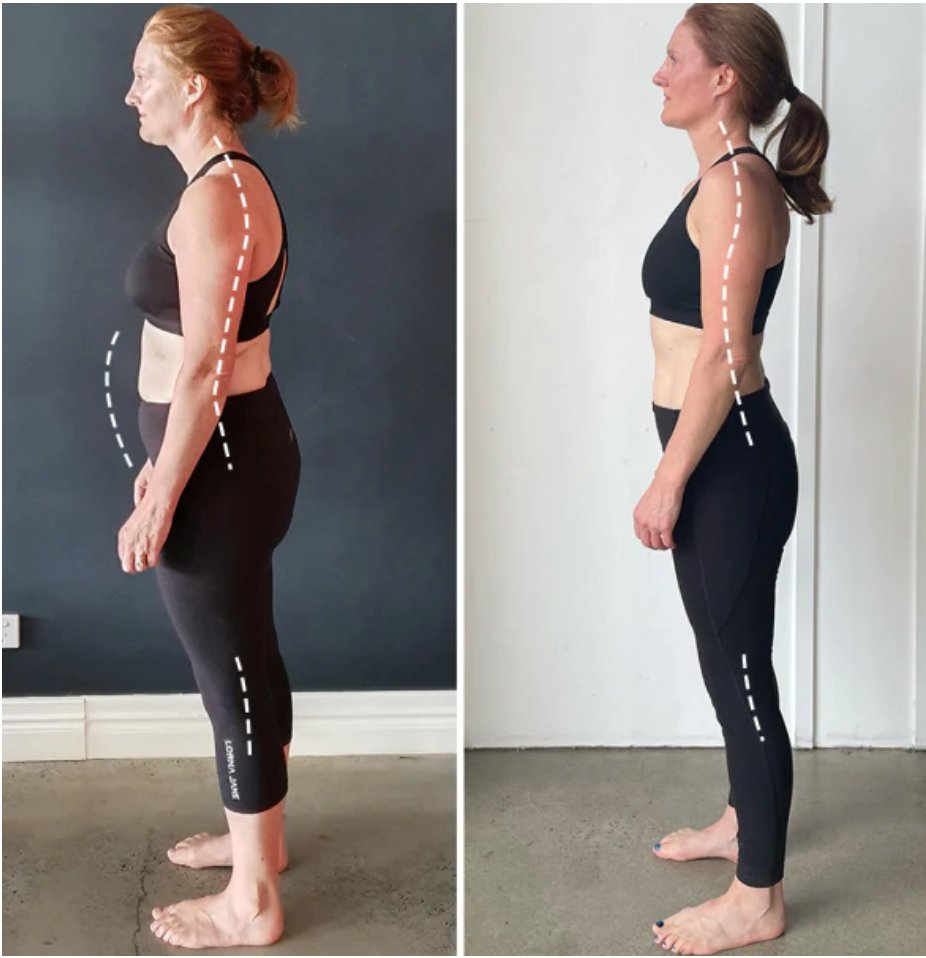

Chronic Pain & Fatigue - The Relationship
Chronic pain and fatigue often share intricate connections due to the complex interplay between physiological, psychological, and behavioural factors. Here are some links and interactions between chronic pain and fatigue:
-
Central Nervous System Sensitisation: Chronic pain can lead to sensitisation of the central nervous system, amplifying pain signals and causing persistent discomfort. This sensitisation can extend to the brain's areas responsible for regulating sleep and energy levels, contributing to fatigue.
-
Sleep Disruption: Pain can disturb sleep patterns, leading to fragmented or insufficient sleep. Poor sleep quality and disrupted sleep cycles can contribute to daytime fatigue, reduced energy, and overall tiredness.
-
Physical De-conditioning: Chronic pain may lead to reduced physical activity due to discomfort or limitations. This physical inactivity can result in muscle de-conditioning, reduced cardiovascular fitness, and decreased stamina, leading to feelings of fatigue.
-
Inflammatory Responses: Both chronic pain and fatigue are associated with underlying inflammatory processes in the body. Inflammatory cytokines released as part of the pain response can contribute to fatigue and feelings of lethargy.
-
Psychological Impact: Living with chronic pain can lead to psychological distress such as anxiety and depression. These emotional states can further exacerbate fatigue by affecting sleep quality, motivation, and overall well-being.
-
Shared Neural Pathways: Brain regions involved in processing pain signals can overlap with those responsible for regulating energy and mood. Dysregulation in these shared neural pathways can lead to both pain perception and fatigue.
-
Hormonal Imbalances: Chronic pain can disrupt the body's stress response and hormonal balance. Dysregulation of cortisol and other stress hormones can contribute to both pain amplification and fatigue.
-
Neurotransmitter Dysfunction: Chronic pain and fatigue can be influenced by alterations in neurotransmitter levels, such as serotonin and dopamine. Imbalances in these neurotransmitters can impact both pain perception and energy regulation.
-
Altered Brain Structure and Function: Long-term pain and fatigue can lead to structural and functional changes in the brain. These changes can contribute to the experience of both chronic pain and fatigue by altering neural networks and brain regions involved in pain modulation, mood regulation, and energy maintenance.
-
Vicious Cycle: Chronic pain and fatigue can form a vicious cycle where one symptom exacerbates the other. For example, pain-related sleep disturbances can lead to increased fatigue, and heightened fatigue can worsen pain perception.
Given the intricate interactions between chronic pain and fatigue, comprehensive treatment approaches often target both symptoms simultaneously. Addressing the underlying causes, managing pain effectively, improving sleep quality, promoting physical activity, and addressing psychological factors can all contribute to alleviating both chronic pain and fatigue.
Dietary RElationship Between Chronic Pain & Chronic Fatigue
There are countless interconnections between diet, chronic pain and chronic fatigue. The pathway we will be looking into in this article is how food affects inflammation and intra-abdominal pressure, and how that then effects chronic pain and chronic fatigue. Dietary inflammation can lead to chronic fatigue directly, or it can lead to chronic pain which also leads to fatigue secondarily.
Foods That Cause Inflammation & Bloating
A Diagram showing how inflammatory foods can affect biomechanics, therefore causing chronic pain and fatigue:

A Deeper Looking Into The Affects Of Bloating On Spine & Postural Health Via Intra-Abdominal Pressure
Bloating can significantly impact intra-abdominal pressure (IAP) and contribute to chronic pain and posture issues. Bloating refers to the sensation of abdominal fullness and distension caused by the accumulation of gas, fluid, or food in the gastrointestinal tract. When bloating occurs, it can disrupt the balance of pressure within the abdomen, leading to various negative effects on the body, including:
-
Increased Intra-Abdominal Pressure: Bloating can cause an increase in intra-abdominal pressure due to the buildup of gas or fluid. This elevated pressure within the abdominal cavity can affect the surrounding structures, including the spine, muscles, and organs.
-
Spinal Alignment and Posture: The increase in intra-abdominal pressure from bloating can impact spinal alignment and posture. Excessive pressure can push against the spine, causing it to shift and potentially leading to misalignment. This can result in changes to the natural curvature of the spine and altered posture.
-
Muscle Imbalance: Bloating can lead to changes in muscle activation patterns. The abdominal muscles, which play a crucial role in stabilizing the spine and maintaining posture, may be affected by the increased pressure. This can result in muscle imbalances and altered muscle recruitment, potentially leading to pain and discomfort.
-
Core Muscle Weakness: Chronic bloating and increased IAP can contribute to weakened core muscles. The pressure from bloating may lead to reduced engagement of core muscles, including the transversus abdominis and pelvic floor muscles, which are essential for maintaining spinal stability.
-
Chronic Pain: The altered pressure distribution caused by bloating can contribute to chronic pain. Increased pressure on spinal structures, nerves, and surrounding tissues can result in discomfort, pain, and a sensation of pressure in the lower back, abdomen, and hips.
-
Altered Movement Patterns: Bloating can affect how the body moves. Individuals experiencing bloating may adopt compensatory movement patterns to avoid exacerbating their discomfort. These altered movement patterns can lead to additional strain on certain muscle groups and joints, potentially causing further pain and posture issues.
-
Breathing Patterns: Bloating can also impact breathing patterns. The increased pressure on the diaphragm and lungs can affect the mechanics of breathing, leading to shallow or restricted breathing. Changes in breathing can further contribute to tension in the muscles of the chest, abdomen, and back.
-
Visceral Sensations: Bloating can cause visceral sensations such as pressure, tightness, and discomfort. These sensations can contribute to a feeling of instability and unease in the body, potentially influencing posture and movement.
-
Reduced Mobility: Chronic bloating and associated discomfort may lead to reduced mobility and physical activity. Individuals may avoid certain movements or activities that exacerbate their symptoms, leading to a cycle of decreased movement, muscle stiffness, and further posture issues.

To address the impact of bloating on intra-abdominal pressure, chronic pain, and posture issues, individuals can consider the following steps:
-
Identify and address underlying causes of bloating, such as dietary triggers or digestive disorders.
-
Manage bloating through dietary modifications, including avoiding foods that contribute to gas and bloating.
-
Practice exercises that promote core strength and stability to support spinal alignment.
-
Engage in mindful breathing techniques to help manage pressure and discomfort caused by bloating.
-
Maintain good posture and be conscious of movement patterns, especially during episodes of bloating.
-
Consult a Functional Patterns Human Biomechanics Specialist.
Addressing bloating and its impact on intra-abdominal pressure can contribute to improved overall comfort, spinal health, and posture.